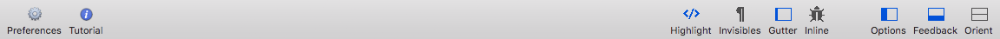
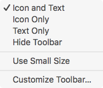
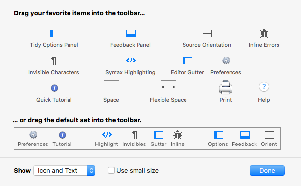

Customize, Hide, or Show the Toolbar
Balthisar Tidy for Work offers a customizable toolbar that can make your workflow more effective. Familiarize yourself with the toolbar in the steps below.
-
The default toolbar contains buttons for Preferences, Tutorial, Highlight, Invisibles, Gutter, Inline, Options, Messages, and Orient. 
-
You can modify the toolbar to suit your own needs by using its contextual menu available via secondary-click. Options such as hiding the toolbar, showing any combination of icon and/or text, and customizing the toolbar are available. 
-
You can modify the toolbar by selecting Customize Toolbar… from the View menu.

-
The standard Mac OS X toolbar customization panel will appear. You can use this to modify your toolbar to suit your preferences as in any standard Mac OS X application. 